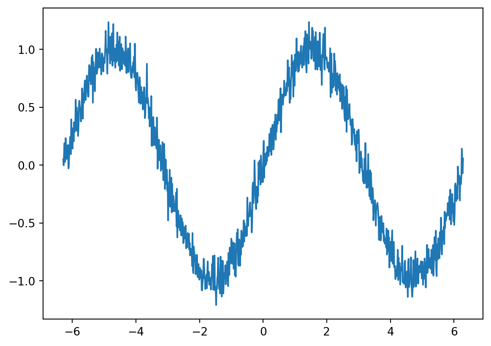
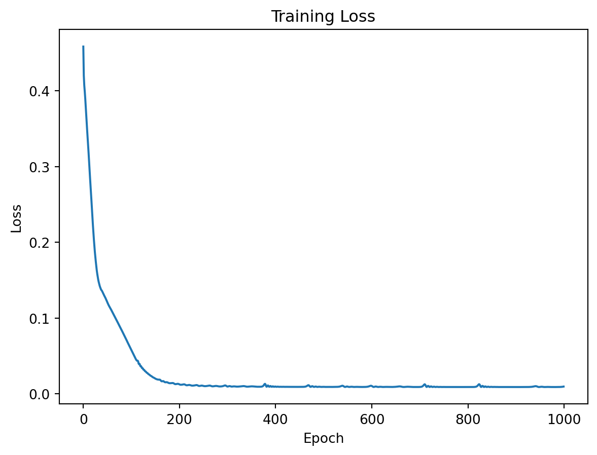
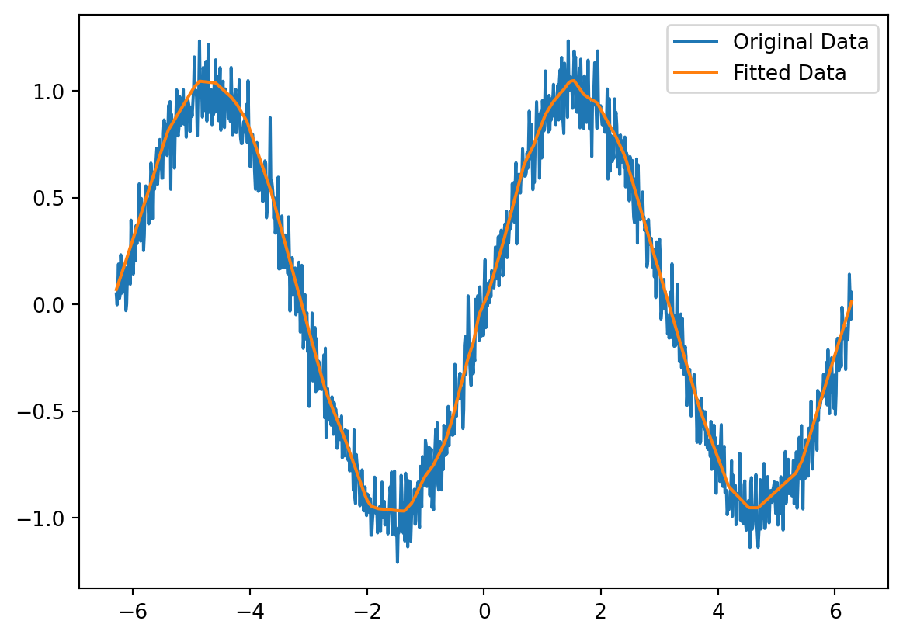

### Step 1: Import Libraries
import torch
import torch.nn as nn
import torch.optim as optim
import numpy as np
import matplotlib.pyplot as pltThe process of creating a neural network using PyTorch with three hidden layers to fit a complex function. We’ll use a synthetic dataset for demonstration purposes. Here’s a step-by-step approach:
- Import Libraries: First, we need to import the necessary libraries.
- Create Synthetic Data: Generate some synthetic data that represents a complex function. For this example, we’ll use a sine wave with added noise.
### Step 2: Create Synthetic Data
# Generate synthetic data
np.random.seed(42)
x = np.linspace(-2 * np.pi, 2 * np.pi, 1000)
y = np.sin(x) + 0.1 * np.random.normal(size=x.shape)
# Convert to PyTorch tensors
x_tensor = torch.tensor(x, dtype=torch.float32).view(-1, 1)
y_tensor = torch.tensor(y, dtype=torch.float32).view(-1, 1)plt.plot(x,y)
- Define the Neural Network: Create a neural network with three hidden layers.
### Step 3: Define the Neural Network
relu=True #none-linear activation function
#relu=False #none-linear activation function
class NeuralNetwork(nn.Module):
def __init__(self):
super(NeuralNetwork, self).__init__()
self.layer1 = nn.Linear(1, 64)
self.layer2 = nn.Linear(64, 128)
self.layer3 = nn.Linear(128, 64)
self.layer4 = nn.Linear(64, 1)
self.relu = nn.ReLU()
def forward(self, x):
if relu:
x = self.relu(self.layer1(x))
x = self.relu(self.layer2(x))
x = self.relu(self.layer3(x))
x = self.layer4(x)
return x
else:
x = self.layer1(x)
x = self.layer2(x)
x = self.layer3(x)
x = self.layer4(x)
return x
model = NeuralNetwork()- Define Loss and Optimizer: Choose a loss function and an optimizer.
### Step 4: Define Loss and Optimizer
criterion = nn.MSELoss() #Mean Square Error(MSE) or L2 loss
optimizer = optim.Adam(model.parameters(), lr=0.001)
#Adam (Adaptive Moment Estimation) optimizer computes adaptive learning rates for each parameter.
#lr=0.001: This sets the learning rate for the optimizer- Train the Model: Train the neural network on the synthetic data.
### Step 5: Train the Model
num_epochs = 1000
losses = []
for epoch in range(num_epochs):
model.train() #Sets the model to training mode
optimizer.zero_grad() #Clears old gradients to prevent accumulation from previous iterations.
outputs = model(x_tensor) #Performs a forward pass, generating predictions from the input data.
loss = criterion(outputs, y_tensor) # Calculates the loss (error) between the predictions and true targets.
loss.backward() #Computes gradients of the loss with respect to the model parameters (backpropagation).
optimizer.step() #Updates the model parameters using the computed gradients to minimize the loss.
if (epoch+1) % 100 == 0:
print(f'Epoch [{epoch+1}/{num_epochs}], Loss: {loss.item():.4f}')
losses.append(loss.item())Epoch [100/1000], Loss: 0.0591Epoch [200/1000], Loss: 0.0129Epoch [300/1000], Loss: 0.0099Epoch [400/1000], Loss: 0.0098Epoch [500/1000], Loss: 0.0094Epoch [600/1000], Loss: 0.0107Epoch [700/1000], Loss: 0.0092Epoch [800/1000], Loss: 0.0091Epoch [900/1000], Loss: 0.0091Epoch [1000/1000], Loss: 0.0097# Plot the training loss
plt.plot(losses)
plt.xlabel('Epoch')
plt.ylabel('Loss')
plt.title('Training Loss')
plt.show()
- Evaluate the Model: Evaluate the model’s performance.
### Step 6: Evaluate the Model
model.eval()
with torch.no_grad():
predicted = model(x_tensor).numpy()
# Plot the results
plt.plot(x, y, label='Original Data')
plt.plot(x, predicted, label='Fitted Data')
plt.legend()
plt.show()